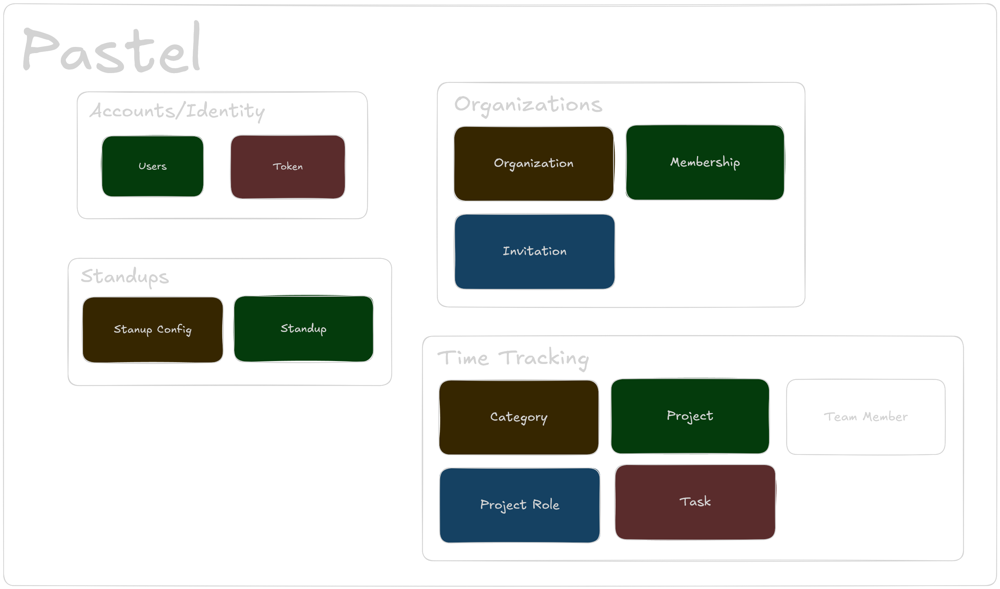

Pastel & Ash: A Rewrite Story
"Life is better with Elixir and Ash framework!"
Why Rewrite Pastel?
The original Pastel system was built with Ruby on Rails. As the project grew, it became:
- Hard to debug and reproduce bugs
- Spaghetti code - logic scattered across callbacks and concerns
- Slower performance under load
- Harder to maintain as the codebase grew
Use DDD to Structure Pastel
- Domain-Driven Design (DDD): organize the system into well-defined contexts and boundaries
- Makes complexity easier to manage
- Keeps a clear separation of concerns
Note: we applied DDD partially, not a full/strict implementation

TechStack
- Ash Framework (Elixir-based and Phoenix)
- PostgreSQL
- Rust for SandClock GUI
What is Ash?
A declarative, resource-oriented framework for Elixir - describe a resource, Ash builds the rest.
- A resource = attributes + actions + relationships + policies, all in one file
- No hand-written controllers, models, or services
- Extensions add JSON:API, GraphQL, Postgres, etc. with no extra boilerplate
Configuration over Convention
- Rails: "Convention over Configuration" - name a file right, put it in the right folder, and magic happens
- That magic is what made old Pastel hard to debug - behavior comes from a convention you have to already know
- Ash flips it: nothing happens unless it's explicitly declared on the resource
- Read the resource, know the behavior
What's New
- Pastel (Ash resources): real-time updates, full test coverage
- SandClock (Rust/ICED): real-time updates, heartbeat, fixed task edge cases
Both apps: faster, more reliable, easier to extend.
Declarative Configuration with Ash
defmodule Pastel.TimeTracking.Task do
use Ash.Resource,
otp_app: :pastel,
domain: Pastel.TimeTracking,
data_layer: AshPostgres.DataLayer,
extensions: [AshJsonApi.Resource],
authorizers: [Ash.Policy.Authorizer]
postgres do
table "tasks"
repo Pastel.Repo
end
multitenancy do
strategy :attribute
attribute :organization_id
end
json_api do
type "task"
end
policies do
policy action_type(:read) do
authorize_if {Pastel.Organizations.Checks.ActorHasRole, roles: [:owner, :admin]}
authorize_if expr(exists(category.project.team_members, user_id == ^actor(:id)))
authorize_if expr(user_id == ^actor(:id))
end
policy action_type([:create, :update]) do
authorize_if {Pastel.Organizations.Checks.ActorHasRole, roles: [:owner, :admin]}
authorize_if expr(user_id == ^actor(:id))
end
policy action_type(:destroy) do
authorize_if {Pastel.Organizations.Checks.ActorHasRole, roles: [:owner, :admin]}
authorize_if expr(user_id == ^actor(:id))
end
end
@task_fields [
:name,
:duration_seconds,
:is_overtime,
:approval_status,
:approve_at,
:work_date,
:user_id,
:category_id,
:approved_by_id
]
actions do
defaults [:read]
create :create do
accept @task_fields
change {Pastel.Organizations.Changes.EnsureUserInTenant, field: :user_id}
change {Pastel.TimeTracking.Changes.BroadcastChange,
topic: "tasks", event: "task_changed", action: :created}
validate {Pastel.TimeTracking.Validations.NotFutureDate, []}
end
update :update do
require_atomic? false
accept @task_fields
argument :expected_version, :integer, allow_nil?: false
change {Pastel.Organizations.Changes.EnsureUserInTenant, field: :user_id}
change {Pastel.TimeTracking.Changes.BroadcastChange,
topic: "tasks", event: "task_changed", action: :updated}
change optimistic_lock(:version)
validate {Pastel.TimeTracking.Validations.NotFutureDate, []}
validate {Pastel.TimeTracking.Validations.ExpectedVersion, []}
end
destroy :destroy do
primary? true
change {Pastel.TimeTracking.Changes.BroadcastChange,
topic: "tasks", event: "task_changed", action: :destroyed}
end
end
attributes do
uuid_primary_key :id
attribute :name, :string do
public? true
end
attribute :duration_seconds, :integer do
allow_nil? false
public? true
end
attribute :is_overtime, :boolean do
public? true
end
attribute :approval_status, :string do
public? true
end
attribute :approve_at, :utc_datetime do
public? true
end
attribute :work_date, :date do
allow_nil? false
public? true
default &Date.utc_today/0
end
attribute :version, :integer do
allow_nil? false
public? true
default 1
end
timestamps()
end
relationships do
belongs_to :organization, Pastel.Organizations.Organization do
allow_nil? false
public? true
end
belongs_to :user, Pastel.Accounts.User do
allow_nil? false
public? true
end
belongs_to :category, Pastel.TimeTracking.Category do
allow_nil? false
public? true
end
belongs_to :approved_by, Pastel.Accounts.User do
public? true
end
end
end
New Requirement from Product
"A single task entry shouldn't log more than 12 hours - anything longer is almost certainly a data-entry mistake."
In a Rails app, that rule could live in a model validation, a form object, a frontend check, or all three - and drift out of sync over time.
The Fix - One Validation, One Place
create :create do
accept @task_fields
change {Pastel.Organizations.Changes.EnsureUserInTenant, field: :user_id}
change {Pastel.TimeTracking.Changes.BroadcastChange,
topic: "tasks", event: "task_changed", action: :created}
validate {Pastel.TimeTracking.Validations.NotFutureDate, []}
+ validate numericality(:duration_seconds, less_than_or_equal_to: 43_200),
+ message: "can't log more than 12 hours in a single entry"
end
The rule lives right next to the field it governs, inside the resource that owns it - not scattered across a model, a form, and a frontend.
API Side
defmodule Pastel.TimeTracking do
use Ash.Domain,
otp_app: :pastel,
extensions: [AshJsonApi.Domain]
json_api do
routes do
base_route "/categories", Pastel.TimeTracking.Category do
get :read
index :read
end
base_route "/projects", Pastel.TimeTracking.Project do
get :read
index :read
end
base_route "/tasks", Pastel.TimeTracking.Task do
get :read
index :read
post :create
patch :update
delete :destroy
end
end
end
resources do
resource Pastel.TimeTracking.Department
resource Pastel.TimeTracking.Project
resource Pastel.TimeTracking.ProjectRole
resource Pastel.TimeTracking.TeamMember
resource Pastel.TimeTracking.Category
resource Pastel.TimeTracking.Task
end
end
Demo

How We Shipped It
All contexts and conditions rebuilt in just 3 days, with heavy AI pairing:
- Claude AI for code assistance - 30% weekly (Pastel)
- Codex for code assistance - 20% weekly (SandClock)
Not a Silver Bullet
- Steeper learning curve - new mental model vs plain Ecto/Phoenix
- Smaller ecosystem than Rails - fewer tutorials, hires
- Heavier compile times as resources grow
Where It Fits Best
- Multi-tenant SaaS with complex authorization
- Real-time features - live updates, dashboards
- APIs with heavy business rules and relationships
- Always-on systems needing fault tolerance
Less of a fit: throwaway scripts, heavy ML/data-science, or a team with no Elixir runway.
Summary
“We didn't just rewrite Pastel - we decomplected it. Simple resources, clear boundaries, easy to change.”